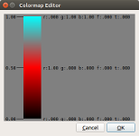
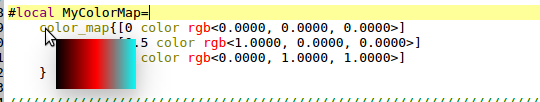
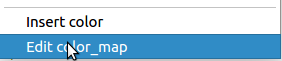
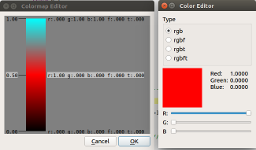
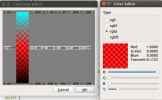

qtpovrayColormap Editor | December 30, 2017 |

{kind=link}
Color maps are a feature of POV-Ray. qtpovray provides some support to assist with colormaps.
Currently, qtpovray only understands the rgb[ft]<> syntax in colormap sub-expressions.
qtpovray displays a representative tooltip of the colormap if you hover over the color_map keyword.

The Colormap Editor is activated via a context-click (right-click). 
{kind=link}
If the cursor is over a color_map token, that color_map is parsed and edited,
otherwise a new color_map is created.
There are two sides to the colormap editor, the offset editor on the left and the color editor on the right.
- Offset Editor - There are two operations, add/remove an entry and move an entry.
- Add/Remove entries - Right click on the space to the left of the swatch to bring up a context menu. If you click over an entry, the menu choice will be to remove it. It you click on a blank area, the menu choice will be to add a new entry at that offset.
- Move existing entry - Left click and drag an exising entry to its desired location.
- Color Editor - Click over an existing color. This opens a companion color editor.  The colormap is updated as you change the color values. 
{kind=link}
{kind=link}
Press Ok to close the editor and accept the changes. If you are editing an existing color_map,
it is replaced with the new color_map. Otherwise, the color_map is inserted at the current cursor.